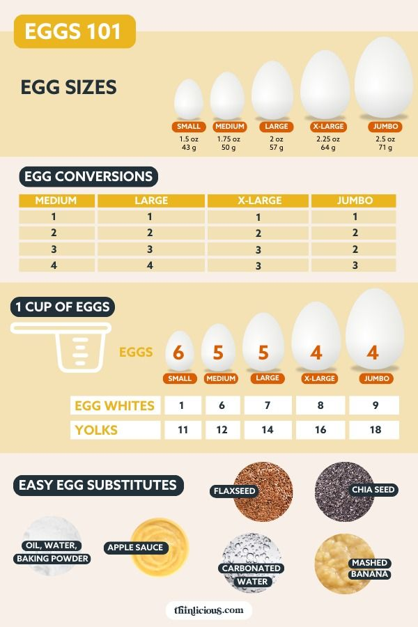
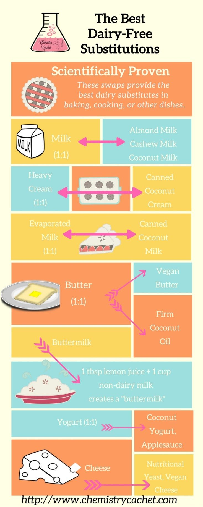
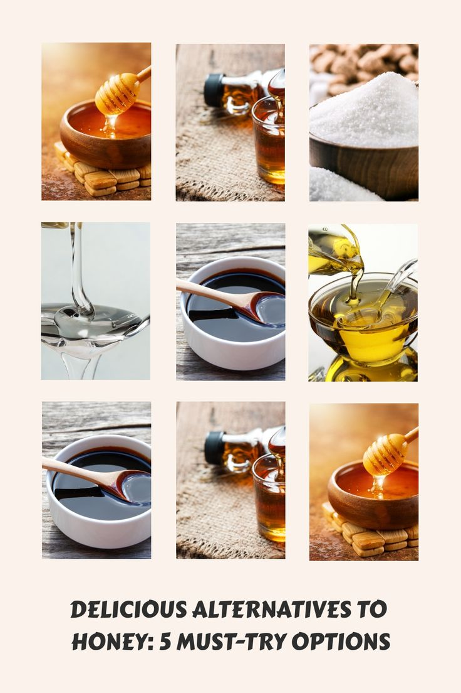

Welcome to your ultimate guide on vegan baking! Whether you're a
seasoned baker or just starting out, you might be wondering how to
replace traditional ingredients like eggs, dairy, and honey in your
recipes. Fear not! This guide will provide you with effective
substitutes that will keep your bakes delicious and satisfying. Let’s
dive in!
Egg Substitutes

Here are some great alternatives to eggs:
-
Flaxseed Meal: Mix 1 tablespoon of flaxseed meal
with 2.5 tablespoons of water. Let it sit for 5 minutes until it
thickens.
-
Chia Seeds: Similar to flaxseed, mix 1 tablespoon
of chia seeds with 2.5 tablespoons of water and let it sit.
-
Applesauce: Use 1/4 cup of unsweetened applesauce
to replace one egg in sweet recipes.
-
Silken Tofu: Blend 1/4 cup of silken tofu until
smooth to replace one egg in dense recipes.
Dairy Substitutes

For those who want to avoid dairy, consider these options:
-
Almond Milk: Use in place of cow's milk in equal
amounts.
-
Coconut Cream: A great substitute for heavy cream,
use it in equal parts.
-
Cashew Cream: Blend soaked cashews with water for a
creamy texture, perfect for sauces and desserts.
-
Vegan Yogurt: Use unsweetened plant-based yogurt as
a substitute for sour cream or yogurt in recipes.
Honey Substitutes

If you're looking to replace honey, try these alternatives:
-
Maple Syrup: Use in equal amounts as a direct
substitute for honey.
-
Agave Nectar: A sweeter alternative, use it in
equal parts.
-
Brown Rice Syrup: This thick syrup can be used in
equal amounts but is less sweet.
-
Molasses: A flavorful option, use it in smaller
amounts as it has a strong taste.
Fun Facts About Vegan Baking
-
Vegan baking can be just as delicious and satisfying as traditional
baking!
-
Many vegan substitutes are not only healthier but also add unique
flavors to your bakes.
-
Experimenting with different substitutes can lead to exciting new
recipes!
-
Vegan baking is a great way to reduce your carbon footprint and
promote sustainability.